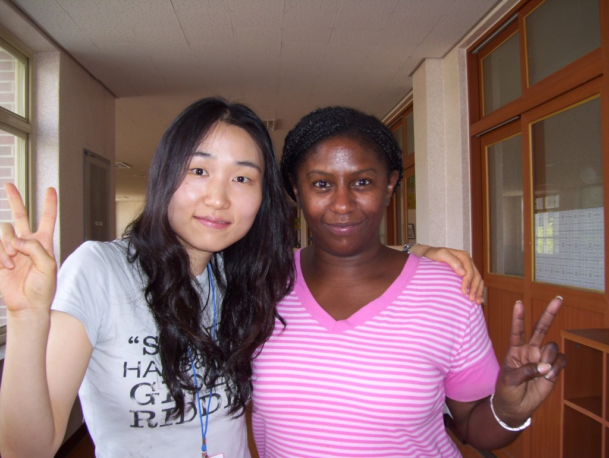

I'd love to hear from you! Whether you're a fellow educator, a traveler, or someone interested in special education, feel free to reach out.
Frequently Asked Questions
How did you get started teaching internationally?

Picture this: I'm in Cambodia, temple-hopping through the moss-kissed ruins of Angkor Wat, when I meet a woman—a true nomadic sage. She's married to a Korean man and teaches English in rural Korea through the EPIK program. Her tales of countryside classrooms and kimchi-fueled adventures spark something deep in me.
Flashback to the previous year: I had conquered the Inca Trail, vertigo and all, proving that fear is just a state of mind. Now, with the spirit of wanderlust coursing through my veins, I decided to channel my inner adventure seeker and dive headfirst into the world of international teaching.
The practical steps? I Googled EPIK, pulled my interview documents together, submitted everything, got approved—then shocked everyone by telling my comfortable, well-paying job I was leaving. Yes, EVERYONE was shocked with my decision.
So how did I start teaching internationally? By listening to the universe's whispers, embracing the unknown, and dancing to the rhythm of adventure. Sometimes the best journeys begin with a conversation with a stranger in an ancient temple.
What qualifications do I need to teach abroad?

Let me break this down for you without the bureaucratic jargon—because when I was researching this while still daydreaming about those Cambodian temples, I wished someone had given me the straight talk.
The Non-Negotiables:
First, you need a bachelor's degree. Any field works—mine happened to be in education, but I've met teachers abroad with degrees in everything from philosophy to engineering. The universe doesn't discriminate when it comes to wanderlust.
You'll also need to be a native English speaker from countries like the US, Canada, UK, Australia, New Zealand, or Ireland. And here's the kicker—you need a TEFL/TESOL certification with at least 100-120 hours of training. Think of it as your passport to the teaching world.
The Paperwork Dance:
Brace yourself for the document shuffle: a squeaky-clean criminal background check, health certificate, and the all-important E-2 teaching visa (for Korea). Yes, you'll feel like you're applying to join a secret society, but it's worth it.
And if you think Korea's paperwork was intense? For Saudi Arabia, it was even worse. I had to get EVERYTHING apostilled and sent to Washington DC to the Saudi consulate. Then came the full physical, pregnancy test, HIV test, AND chest scan—only to turn around and do the EXACT SAME THING in Saudi Arabia. At least Korea let me handle all the medical requirements in-country. But that story is for another day.
Your Teaching Adventure Options:
- EPIK programs (like my Korean journey) place you in public schools—government-backed with solid support
- Hagwons (private academies) are perfect for first-timers willing to dive in
- International schools want the seasoned pros with teaching credentials
- Universities are the holy grail but demand serious experience
Reality Check:
Teaching experience helps but isn't always mandatory—I jumped in with more wanderlust than classroom hours. Some positions have age limits (usually around 62), and salaries range from about $1,600-$2,500 monthly, depending on where you land.
The secret ingredient? That same spirit that made you Google "teaching abroad" in the first place. The paperwork is temporary; the adventure is life-changing. Trust me—one day you'll be standing on a dock at Dokdo Island, wind in your hair, thinking about how every apostilled document and medical test was worth this exact moment.
How do you adapt to different educational systems?

Like a chameleon with a passport, a lesson plan, and a radar for geopolitics.
I went from the land of K-pop and kimchi—where technically, the country's still at war—to the land of sand, where black abayas became my new teacher uniform and not everything on the curriculum could be taught. Adapting wasn't just about swapping lesson plans; it was about tuning into the local culture, unspoken rules, and political undercurrents like I was adjusting a classroom thermostat.
In Korea, I leaned into structure, speed, and sky-high academic pressure—with students who could dance BTS choreo better than I could do morning stretches. In Saudi, I learned to slow down, respect religious boundaries, navigate gender dynamics, and rework content so it aligned with cultural sensitivities—all while keeping students engaged.
So how do I adapt? I observe first, ask questions, listen more than I speak (at least at the start), and then I tailor. It's part educator, part diplomat, part caffeine-fueled improv artist.
Because in international teaching, flexibility isn't a skill—it's a survival strategy. 🧳🌍✏️
What's the biggest challenge of teaching internationally?
The loneliness—and I mean all the variations of it.
In Korea, I was the only foreigner in my school, surrounded by conversations I couldn't follow and cultural jokes that sailed right over my head. Every staff meeting felt like watching a movie without subtitles while everyone else laughed at the punchlines.
Then I swung to Saudi, where suddenly there were too many expats—a United Nations of teachers all trying to out-expat each other with their "back home" stories and complaints about everything from the wifi to the weather. The irony? Being surrounded by fellow foreigners somehow made me feel even more isolated.
Both extremes can drive you absolutely crazy. Too alone, and you start talking to your houseplants (guilty). Too crowded with other displaced souls, and you lose yourself in a sea of shared homesickness and cultural confusion.
But here's what I've learned: you have to get comfortable with your own company. Find joy in your solitude—whether that's perfecting your silly faces for the camera, discovering a new coffee shop where nobody knows your teaching horror stories, or just embracing those quiet moments when it's just you and your thoughts in a country that's still figuring you out.
The biggest challenge isn't the visa paperwork or the cultural missteps—it's learning to be your own best companion when you're 8,000 miles from anyone who truly gets your references to that one restaurant back home.
But honestly? Once you master that art of happy solitude, you become unstoppable. 🌍📸✨